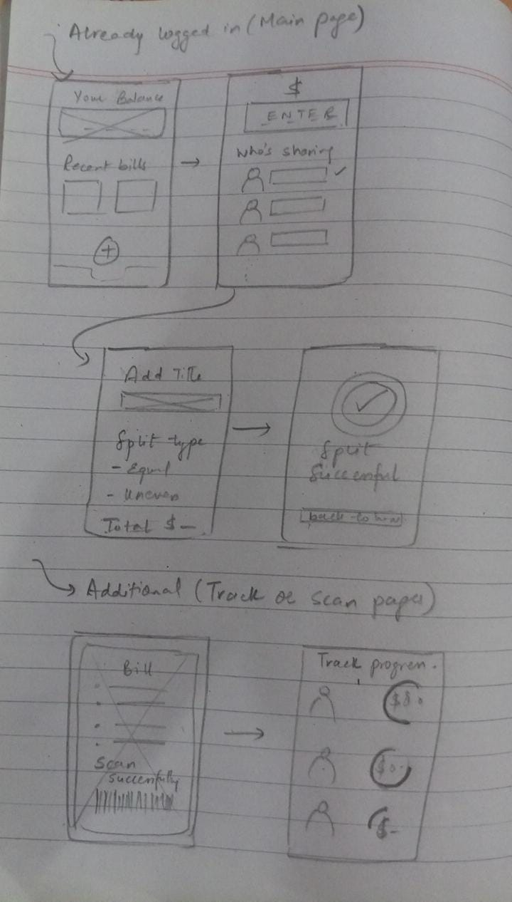

Introduction
Weeks 3 and 4 focus on understanding how human–computer interaction is not only a technical process, but also a social and cognitive experience. Interfaces often mediate social relationships, emotions, and trust.
The "Who Paid?" Problem (Social HCI Case Study)
The "Who Paid?" problem commonly occurs in group settings such as dinners, trips, or shared expenses. Although it appears to be a simple financial task, it often creates social discomfort, confusion, and conflict.
Applications like Splitwise attempt to solve this problem, but poor interaction design can increase cognitive load and social awkwardness.
Norman's Seven Stages Applied to the "Who Paid?" Problem
| Stage | User Experience Example | HCI Challenge |
|---|---|---|
| Goal | Record that one friend paid for a group dinner | Goal is social fairness, not just data entry |
| Plan | Open app → add expense → choose participants | Multiple mental decisions required |
| Specify | Enter amount, select payer, choose split method | Memory burden and fear of mistakes |
| Execute | Typing, tapping, selecting options | Interrupts social interaction |
| Perceive | Confirmation message and updated balances | Feedback must be clear to all users |
| Interpret | Understanding who owes how much | Financial interpretation can be stressful |
| Evaluate | Check if split is fair and correct | Social trust and validation required |
Cognitive & Social Challenges
- High cognitive load due to remembering amounts and participants
- Social pressure to avoid appearing unfair or "cheap"
- Ambiguity in understanding who owes what
- Lack of immediate shared visibility increases confusion
Wireframe: Conceptual Design for Expense Sharing
A well-designed interface can reduce social awkwardness by making actions visible, reversible, and clearly explained.
Norman vs GOMS vs KLM (Conceptual Comparison)
Different cognitive models explain different aspects of user interaction. This comparison focuses on what each model is best suited for.
| Model | Main Focus | What It Explains | Example in "Who Paid?" |
|---|---|---|---|
| Norman | Understanding & feedback | User confusion, errors, and gulfs | Did users understand the final split? |
| GOMS | Task structure | Efficiency for expert users | Steps to add an expense quickly |
| KLM | Physical actions | Speed of execution | Typing amount vs tapping buttons |
Conclusion
The "Who Paid?" problem demonstrates that HCI design must account for social context, emotions, and cognitive limitations. Norman's model is particularly effective for analyzing such systems, while GOMS and KLM are more suitable for efficiency and performance analysis.